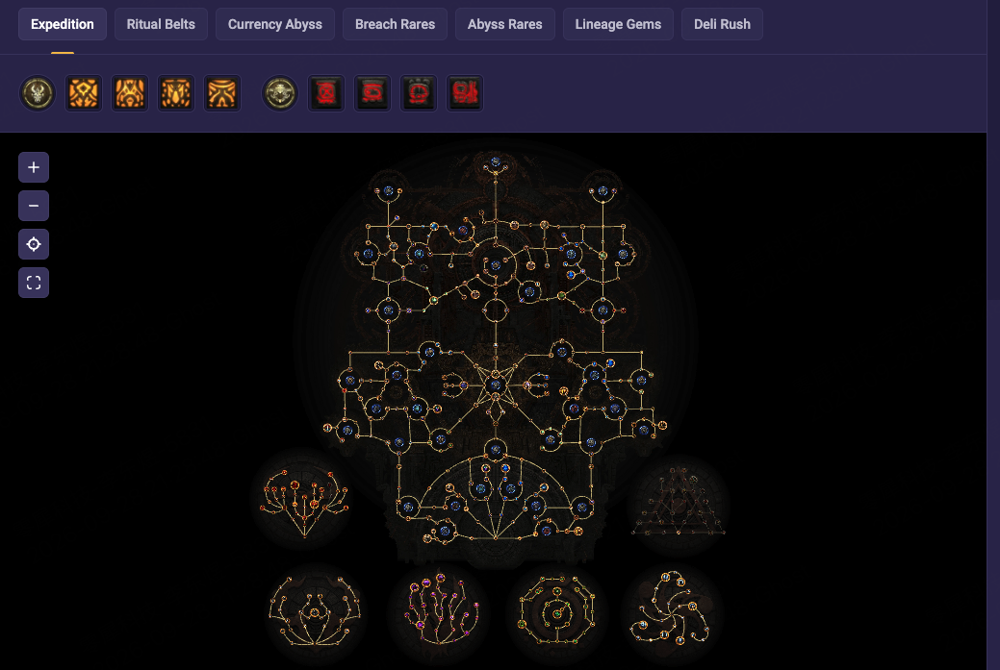
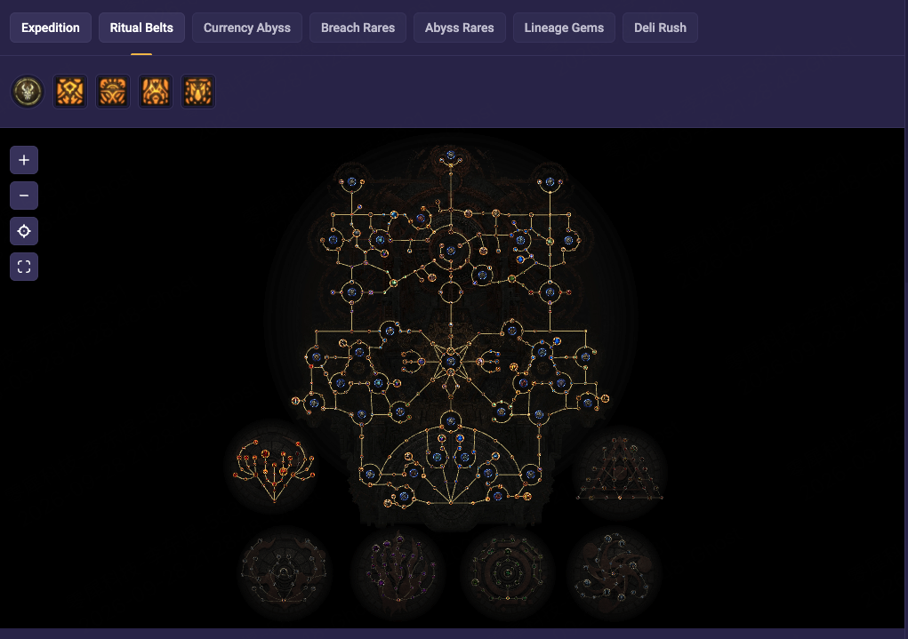
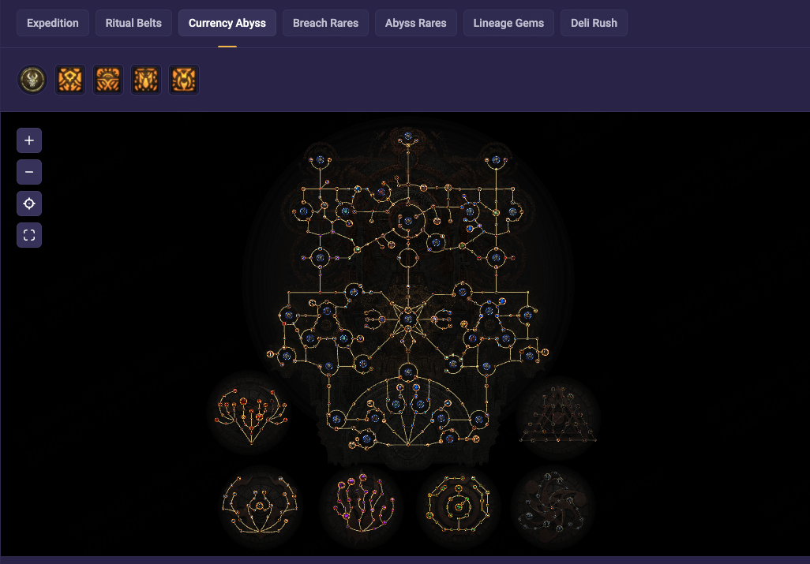
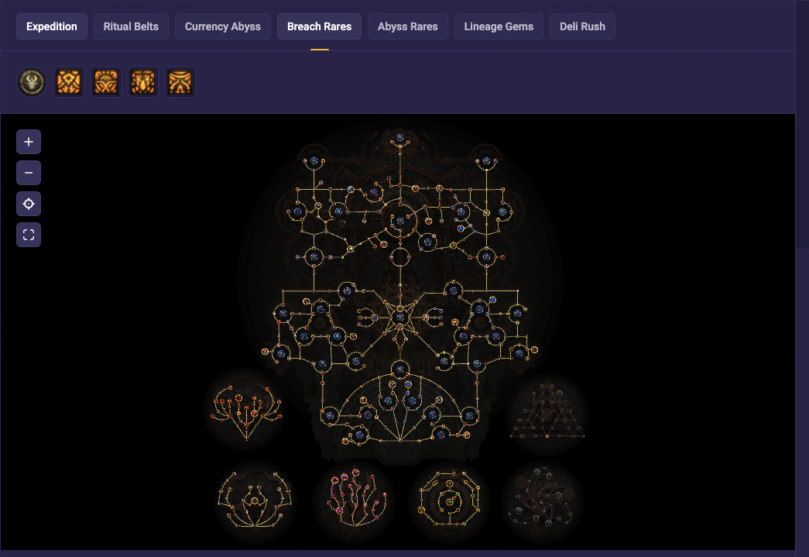
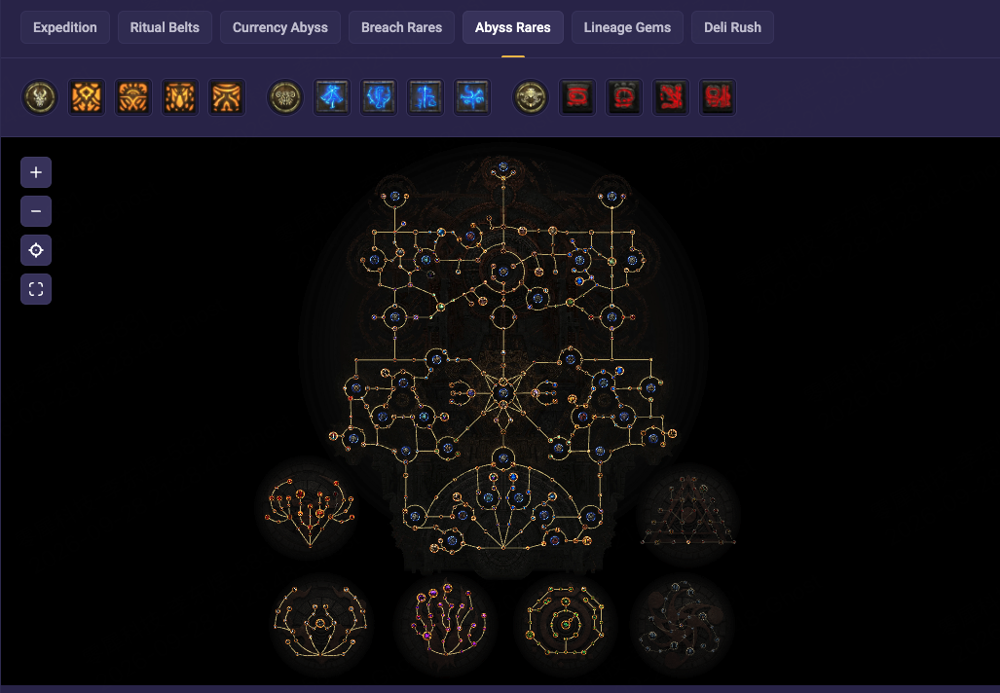
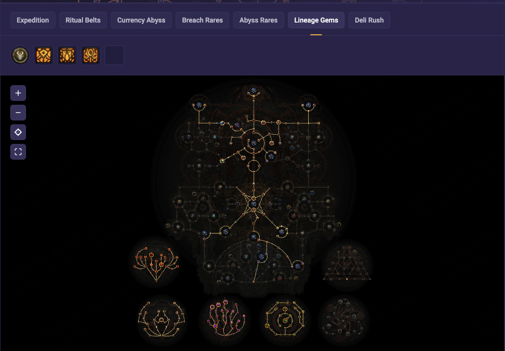
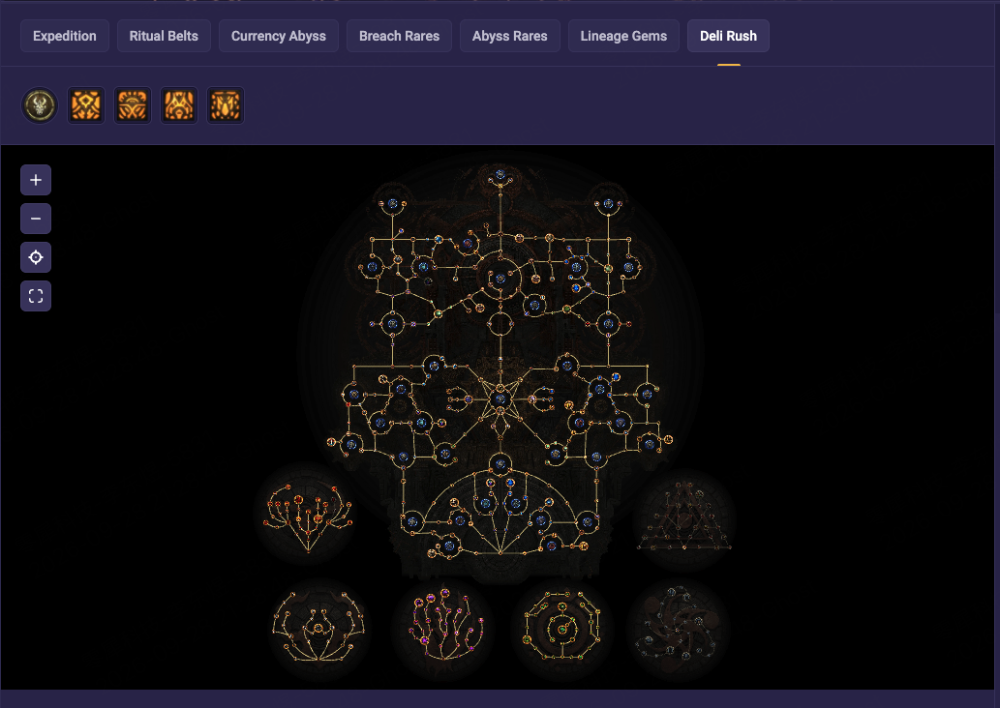

流放之路2新手总攻略
以Fubgun冰射为主线，把剧情、装备、打造、宝石、异界与持续养成串成一条可查的路线。
先走一条完整路线，而不是同时看十份攻略
新手顺序：剧情获得并理解技能 → 看当前阶段全身装备 → 补可用词缀与品质 → 核对宝石和资源 → 开始异界解锁 → 选Fubgun的一套刷法 → 有目标地升级人物。遇到卡点回查对应模块，不重开一套其他职业。
“完整”指这条新手使用流程及已有阶段资料集中可读，不代表缺少证据的特殊工艺已经被验证。首页仍先看全身装备；本页把为什么做、怎么做与验收连接起来。
剧情起步：先用得顺，再进入冰射
Fubgun的冰射练级页本身先用闪电箭与引雷针过渡，冰射到31级才解锁；这段闪电过渡不是把另一套Lightning Arrow终局构筑混进来。准备转换时同时确认宝石、武器和资源，而不是等级一到就撤掉原本能用的主输出。
- 城镇和掉落中比较可用弓、移动速度鞋、生命抗性防具；先解决“能穿、能打、不会频繁死亡”。不要把后期ilvl75配方当剧情装备门票。
- 保留升级与转型需要的未切割宝石。拿到同名技能时看是否要升级现有宝石，避免切出一堆不用的新宝石。
- 常用生命／魔力药剂跟进底材和需求，检查解冻等咒符的实际装备状态。
- 到永久奖励页面核对已完成任务，领到的奖励不要反复重做；升华试炼按游戏任务实际条件推进。
人物分支与技能连接：原资料随时能查
| 阶段 | 现在的任务 | 现有完整资料 |
|---|---|---|
| 剧情起步 | 先建立可用主输出与首领输出；随着解锁换到冰射。 | 从1–14级开始 / 全阶段 |
| 01 Early / 02 非暴击中期 | 把生命、闪避与输出连接做齐；逐件补装备，不以全毕业物品当入场要求。 | 01 / 02 |
| 03 非暴击混合防御 | 防御装备达到切换条件再采用；不是人物到了某级就必须转。 | 03 |
| 04 暴击混合防御 | 先备对应弓／箭袋，再整体切换；仍保留狙击。 | 04 |
| 05 高配 | 独立高配参考；不保留狙击，不能把它的技能连接拼给04。 | 05 |
| 06 Live Gear | 原始冲突资料，只读对照，不导入当正式下一步。 | 06只读 |
1–14级 · 闪电起步 — 技能与连接参考
以下直接沿用R26阶段资料，未把当前原网页默认分支覆盖所有历史分支。角色按键只是站内建议。完整天赋位置及原件在本阶段页面。
| 技能 | 辅助 | 用途与限制 |
|---|---|---|
| 闪电箭矢Lightning Arrow | 快速攻击 I / 元素军械 I | 清怪主输出。阶段内逐步拿到，不是1级瞬间配齐。 清图主输出；前期配合引雷针。没有9级未切割技能宝石，不因人物到31级自动换冰射。 |
| 引雷针Lightning Rod | 范围集中 / 元素军械 I | 单体工具；先放引雷针，再以闪电箭矢配合。 先把箭插在目标附近，再用闪电箭矢触发连锁爆发。 |
| 寒霜爆Frost Bomb | 原资料未列辅助 | 有空位与属性时使用，别无限压低宝石等级。 可选曝露工具，会增加一个按键和智慧要求。省略并非同伤害。 |
| 闪电之捷Herald of Thunder | 范围集中 | 拿到精魂宝石且预算允许后启用。 常驻清图增益，取得相应精魂宝石与精魂后再开启。 |
| 弹幕Barrage | 原资料未列辅助 | 获得后才用；不等于1级可直接装。 强化下一次可重复的弓攻击；无球仍有基础重复。永续充能不是产球技能。 |
| 冰尖箭矢Ice-Tipped Arrows | 原资料未列辅助 | 获得后用于冻结辅助，不是1级起手必有。 强化后续攻击，前期用于冰霜/冻结配合；没有球不代表技能完全无作用。 |
| 巨狼猛扑Pounce | 原资料未列辅助 | 可选：副武器组放可用魔符；按钮/属性/槽位不足可不装。 涉及护符变形/武器组；纯新手默认不加入剧情移动简化方案。06原件只读，不照做。 |
15–23级 · 强化弓，预留转型宝石 — 技能与连接参考
以下直接沿用R26阶段资料，未把当前原网页默认分支覆盖所有历史分支。角色按键只是站内建议。完整天赋位置及原件在本阶段页面。
| 技能 | 辅助 | 用途与限制 |
|---|---|---|
| 闪电箭矢Lightning Arrow | 快速攻击 I / 元素军械 I | 清怪主输出。阶段内逐步拿到，不是1级瞬间配齐。 清图主输出；前期配合引雷针。没有9级未切割技能宝石，不因人物到31级自动换冰射。 |
| 引雷针Lightning Rod | 范围集中 / 元素军械 I | 单体工具；先放引雷针，再以闪电箭矢配合。 先把箭插在目标附近，再用闪电箭矢触发连锁爆发。 |
| 寒霜爆Frost Bomb | 原资料未列辅助 | 有空位与属性时使用，别无限压低宝石等级。 可选曝露工具，会增加一个按键和智慧要求。省略并非同伤害。 |
| 闪电之捷Herald of Thunder | 范围集中 / 元素军械 I | 拿到精魂宝石且预算允许后启用。 常驻清图增益，取得相应精魂宝石与精魂后再开启。 |
| 弹幕Barrage | 原资料未列辅助 | 获得后才用；不等于1级可直接装。 强化下一次可重复的弓攻击；无球仍有基础重复。永续充能不是产球技能。 |
| 冰尖箭矢Ice-Tipped Arrows | 范围扩大 I | 获得后用于冻结辅助，不是1级起手必有。 强化后续攻击，前期用于冰霜/冻结配合；没有球不代表技能完全无作用。 |
| 巨狼猛扑Pounce | 原资料未列辅助 | 可选：副武器组放可用魔符；按钮/属性/槽位不足可不装。 涉及护符变形/武器组；纯新手默认不加入剧情移动简化方案。06原件只读，不照做。 |
24–30级 · 建立冻结＋狙击 — 技能与连接参考
以下直接沿用R26阶段资料，未把当前原网页默认分支覆盖所有历史分支。角色按键只是站内建议。完整天赋位置及原件在本阶段页面。
| 技能 | 辅助 | 用途与限制 |
|---|---|---|
| 闪电箭矢Lightning Arrow | 快速攻击 I / 元素军械 I | 暂留到31级换冰射；不要把所有储备耗在继续抬高闪电箭矢。 清图主输出；前期配合引雷针。没有9级未切割技能宝石，不因人物到31级自动换冰射。 |
| 狙击Snipe | 范围集中 / 大好时机 I / 元素军械 II | 首领冻结后完美释放。24级是作者转型节点，不是狙击解锁等级。 按住蓄力，在完美窗口释放；爆发还需要直接命中冻结目标。弹幕后别夹其他攻击。 |
| 冰冻印记Freezing Mark | 持续时间延长 I | 7级未切割技能宝石优先用于它。 挂在敌人身上，冻结后激活。连接充能印记才有地面感电；虹吸只按物理攻击击中伤害偷取。 |
| 闪电之捷Herald of Thunder | 范围集中 / 元素军械 I | 到31级再替换为寒冰之捷。 常驻清图增益，取得相应精魂宝石与精魂后再开启。 |
| 弹幕Barrage | 原资料未列辅助 | 准备好冻结后再开；紧接狙击，别夹其他攻击。 强化下一次可重复的弓攻击；无球仍有基础重复。永续充能不是产球技能。 |
| 冰尖箭矢Ice-Tipped Arrows | 范围扩大 I / 元素军械 I | 强化后续攻击，前期用于冰霜/冻结配合；没有球不代表技能完全无作用。 |
| 冻结齐射Freezing Salvo | 冻结 / 范围集中 | 这一阶段建立冻结的关键工具。 用来补冻结；看见敌人确实冻住后再进入狙击爆发。 |
| 寒霜爆Frost Bomb | 原资料未列辅助 | 原页面仍列出；属性、等级和按钮负担不合适可省。 可选曝露工具，会增加一个按键和智慧要求。省略并非同伤害。 |
31–41级 · 正式换冰霜射击 — 技能与连接参考
以下直接沿用R26阶段资料，未把当前原网页默认分支覆盖所有历史分支。角色按键只是站内建议。完整天赋位置及原件在本阶段页面。
| 技能 | 辅助 | 用途与限制 |
|---|---|---|
| 冰霜射击Ice Shot | 快速攻击 I / 元素军械 II / 霜咬 I | 31级且有对应宝石后，用它替换闪电箭矢。 清图并建立冻结。不要将元素集中或元素军械III随意放到负责冻结的冰射。 |
| 狙击Snipe | 范围集中 / 大好时机 I / 元素军械 II | 按住蓄力，在完美窗口释放；爆发还需要直接命中冻结目标。弹幕后别夹其他攻击。 |
| 冰冻印记Freezing Mark | 持续时间延长 I / 虹吸印记 / 永恒印记 | 按作者武器组Ⅱ设置；偷取不是按总冰伤。 挂在敌人身上，冻结后激活。连接充能印记才有地面感电；虹吸只按物理攻击击中伤害偷取。 |
| 寒冰之捷Herald of Ice | 范围扩大 I / 元素军械 II / 元素集中 | 替换闪电之捷；不要把此处元素集中搬给主冰射。 常驻清图增益，需有足够精魂；不是每遇到怪都按一次。 |
| 弹幕Barrage | 冷却回复 I | 强化下一次可重复的弓攻击；无球仍有基础重复。永续充能不是产球技能。 |
| 冰尖箭矢Ice-Tipped Arrows | 范围扩大 I / 元素军械 II | 强化后续攻击，前期用于冰霜/冻结配合；没有球不代表技能完全无作用。 |
| 冻结齐射Freezing Salvo | 冻结 / 范围集中 | 作者仍列出；冰射已能稳定冻结时可省掉一个按钮。 用来补冻结；看见敌人确实冻住后再进入狙击爆发。 |
| 战斗狂怒Combat Frenzy | 原资料未列辅助 | 有精魂时启用；提供条件产球，不等于永远满球。 常驻条件产球工具；此技能从异界03原件起移除，不再计算它的收益。 |
42–59级 · 龙卷与清图连接成型 — 技能与连接参考
以下直接沿用R26阶段资料，未把当前原网页默认分支覆盖所有历史分支。角色按键只是站内建议。完整天赋位置及原件在本阶段页面。
| 技能 | 辅助 | 用途与限制 |
|---|---|---|
| 冰霜射击Ice Shot | 快速攻击 I / 元素军械 II / 霜咬 II / 分叉 | 清图并建立冻结。不要将元素集中或元素军械III随意放到负责冻结的冰射。 |
| 狙击Snipe | 范围集中 / 大好时机 I / 元素军械 II / 元素集中 | 按住蓄力，在完美窗口释放；爆发还需要直接命中冻结目标。弹幕后别夹其他攻击。 |
| 冰冻印记Freezing Mark | 充能印记 / 持续时间延长 II / 永恒印记 | 42–59页面不再连虹吸印记；不要继续计算它的偷取。 挂在敌人身上，冻结后激活。连接充能印记才有地面感电；虹吸只按物理攻击击中伤害偷取。 |
| 寒冰之捷Herald of Ice | 范围扩大 I / 元素军械 II / 元素集中 | 常驻清图增益，需有足够精魂；不是每遇到怪都按一次。 |
| 弹幕Barrage | 冷却回复 I / 快速施法 II | 强化下一次可重复的弓攻击；无球仍有基础重复。永续充能不是产球技能。 |
| 冰尖箭矢Ice-Tipped Arrows | 短暂引信 I / 元素军械 II / 范围扩大 I | 强化后续攻击，前期用于冰霜/冻结配合；没有球不代表技能完全无作用。 |
| 战斗狂怒Combat Frenzy | 能量球激增 I | 常驻条件产球工具；此技能从异界03原件起移除，不再计算它的收益。 |
| 风舞者Wind Dancer | 击退 | 精魂不足先按实际防御/产球取舍，不能默认三项常驻都已启用。 常驻闪避/反击工具；受击前后状态不同。05辅助把这项保留改为生命，另行核对。 |
| 龙卷射击Tornado Shot | 持续时间延长 II / 冗余 II / 快速攻击 II | 依作者42–59页面顺序保留。摆在箭路可穿过的位置；不是41级一到就自动拿齐辅助。 放在箭路可利用的位置；箭矢复制有惩罚，持续伤害不等于击中，不能默认致盲已触发。 |
60级＋ / 通关衔接 · 通关收尾，衔接异界 — 技能与连接参考
以下直接沿用R26阶段资料，未把当前原网页默认分支覆盖所有历史分支。角色按键只是站内建议。完整天赋位置及原件在本阶段页面。
| 技能 | 辅助 | 用途与限制 |
|---|---|---|
| 冰霜射击Ice Shot | 快速攻击 I / 元素军械 II / 霜咬 II / 分叉 | 清图并建立冻结。不要将元素集中或元素军械III随意放到负责冻结的冰射。 |
| 狙击Snipe | 范围集中 / 大好时机 I / 元素军械 II / 元素集中 | 按住蓄力，在完美窗口释放；爆发还需要直接命中冻结目标。弹幕后别夹其他攻击。 |
| 冰冻印记Freezing Mark | 充能印记 / 持续时间延长 II / 永恒印记 | 42–59页面不再连虹吸印记；不要继续计算它的偷取。 挂在敌人身上，冻结后激活。连接充能印记才有地面感电；虹吸只按物理攻击击中伤害偷取。 |
| 寒冰之捷Herald of Ice | 范围扩大 I / 元素军械 II / 元素集中 | 常驻清图增益，需有足够精魂；不是每遇到怪都按一次。 |
| 弹幕Barrage | 冷却回复 I / 快速施法 II | 强化下一次可重复的弓攻击；无球仍有基础重复。永续充能不是产球技能。 |
| 冰尖箭矢Ice-Tipped Arrows | 短暂引信 I / 元素军械 II / 范围扩大 I | 强化后续攻击，前期用于冰霜/冻结配合；没有球不代表技能完全无作用。 |
| 战斗狂怒Combat Frenzy | 能量球激增 I | 常驻条件产球工具；此技能从异界03原件起移除，不再计算它的收益。 |
| 风舞者Wind Dancer | 击退 | 精魂不足先按实际防御/产球取舍，不能默认三项常驻都已启用。 常驻闪避/反击工具；受击前后状态不同。05辅助把这项保留改为生命，另行核对。 |
| 龙卷射击Tornado Shot | 持续时间延长 II / 冗余 II / 快速攻击 II | 依作者42–59页面顺序保留。摆在箭路可穿过的位置；不是41级一到就自动拿齐辅助。 放在箭路可利用的位置；箭矢复制有惩罚，持续伤害不等于击中，不能默认致盲已触发。 |
01 Early · 初期 · 进入异界 — 技能与连接参考
以下直接沿用R26阶段资料，未把当前原网页默认分支覆盖所有历史分支。角色按键只是站内建议。完整天赋位置及原件在本阶段页面。
| 技能 | 辅助 | 用途与限制 |
|---|---|---|
| 冰霜射击Ice Shot | 元素军械 II / 霜咬 II / 快速攻击 II / 分叉 | 清图并建立冻结。不要将元素集中或元素军械III随意放到负责冻结的冰射。 |
| 狙击Snipe | 元素军械 II / 范围集中 / 元素集中 / 大好时机 II / 近战 II | 按住蓄力，在完美窗口释放；爆发还需要直接命中冻结目标。弹幕后别夹其他攻击。 |
| 龙卷射击Tornado Shot | 持续时间延长 II / 冗余 II / 耐久度 | 放在箭路可利用的位置；箭矢复制有惩罚，持续伤害不等于击中，不能默认致盲已触发。 |
| 冰尖箭矢Ice-Tipped Arrows | 范围扩大 II / 元素军械 II / 短暂引信 I / 远射 II | 强化后续攻击，前期用于冰霜/冻结配合；没有球不代表技能完全无作用。 |
| 冰冻印记Freezing Mark | 虹吸印记 II / 充能印记 / 永恒印记 / 持续时间延长 II | 挂在敌人身上，冻结后激活。连接充能印记才有地面感电；虹吸只按物理攻击击中伤害偷取。 |
| 弹幕Barrage | 冷却回复 II / 永续充能 / 快速施法 II | 强化下一次可重复的弓攻击；无球仍有基础重复。永续充能不是产球技能。 |
| 寒冰之捷Herald of Ice | 范围扩大 II / 元素军械 II / 远射 II / 冰霜协调 | 常驻清图增益，需有足够精魂；不是每遇到怪都按一次。 |
| 战斗狂怒Combat Frenzy | 能量球激增 II | 常驻条件产球工具；此技能从异界03原件起移除，不再计算它的收益。 |
| 幻影射手Mirage Archer | 冰霜射击 / 元素军械 II / 从容不迫 / 快速攻击 II | 元技能，内槽冰霜射击是主动宝石；不要把它当成同名辅助。先开启并按技能说明触发。 |
| 蜃影神射Mirage Deadeye | 冰霜射击 / 元素军械 II / 从容不迫 / 快速攻击 II | 由蜃影神射升华给予的元技能；内槽冰射要单独配置。不是去刷同名未切割技能宝石。 |
02 non-crit Midgame · 中期 · 非暴击补强 — 技能与连接参考
以下直接沿用R26阶段资料，未把当前原网页默认分支覆盖所有历史分支。角色按键只是站内建议。完整天赋位置及原件在本阶段页面。
| 技能 | 辅助 | 用途与限制 |
|---|---|---|
| 冰霜射击Ice Shot | 元素军械 II / 霜咬 II / 快速攻击 II / 分叉 / 冰霜协调 | 清图并建立冻结。不要将元素集中或元素军械III随意放到负责冻结的冰射。 |
| 狙击Snipe | 元素军械 II / 范围集中 / 元素集中 / 大好时机 II / 近战 II | 按住蓄力，在完美窗口释放；爆发还需要直接命中冻结目标。弹幕后别夹其他攻击。 |
| 龙卷射击Tornado Shot | 持续时间延长 II / 冗余 II / 耐久度 / 致盲 II | 放在箭路可利用的位置；箭矢复制有惩罚，持续伤害不等于击中，不能默认致盲已触发。 |
| 冰尖箭矢Ice-Tipped Arrows | 范围扩大 II / 元素军械 II / 短暂引信 I / 远射 II | 强化后续攻击，前期用于冰霜/冻结配合；没有球不代表技能完全无作用。 |
| 冰冻印记Freezing Mark | 虹吸印记 II / 充能印记 / 永恒印记 / 持续时间延长 II | 挂在敌人身上，冻结后激活。连接充能印记才有地面感电；虹吸只按物理攻击击中伤害偷取。 |
| 弹幕Barrage | 冷却回复 II / 永续充能 / 快速施法 II | 强化下一次可重复的弓攻击；无球仍有基础重复。永续充能不是产球技能。 |
| 寒冰之捷Herald of Ice | 范围扩大 II / 元素军械 II / 远射 II / 冰霜协调 / 元素集中 | 常驻清图增益，需有足够精魂；不是每遇到怪都按一次。 |
| 战斗狂怒Combat Frenzy | 能量球激增 II | 常驻条件产球工具；此技能从异界03原件起移除，不再计算它的收益。 |
| 幻影射手Mirage Archer | 冰霜射击 / 元素军械 II / 从容不迫 / 快速攻击 II | 元技能，内槽冰霜射击是主动宝石；不要把它当成同名辅助。先开启并按技能说明触发。 |
| 蜃影神射Mirage Deadeye | 冰霜射击 / 元素军械 II / 快速攻击 II / 从容不迫 / 冷却回复 II | 由蜃影神射升华给予的元技能；内槽冰射要单独配置。不是去刷同名未切割技能宝石。 |
03 non-crit Hybrid swap · 转型 · 非暴击混合防御 — 技能与连接参考
以下直接沿用R26阶段资料，未把当前原网页默认分支覆盖所有历史分支。角色按键只是站内建议。完整天赋位置及原件在本阶段页面。
| 技能 | 辅助 | 用途与限制 |
|---|---|---|
| 冰霜射击Ice Shot | 元素军械 II / 霜咬 II / 快速攻击 II / 分叉 / 冰霜协调 | 清图并建立冻结。不要将元素集中或元素军械III随意放到负责冻结的冰射。 |
| 狙击Snipe | 元素军械 II / 范围集中 / 元素集中 / 大好时机 II / 近战 II | 按住蓄力，在完美窗口释放；爆发还需要直接命中冻结目标。弹幕后别夹其他攻击。 |
| 龙卷射击Tornado Shot | 持续时间延长 II / 冗余 II / 耐久度 / 致盲 II | 放在箭路可利用的位置；箭矢复制有惩罚，持续伤害不等于击中，不能默认致盲已触发。 |
| 冰尖箭矢Ice-Tipped Arrows | 范围扩大 II / 元素军械 II / 短暂引信 I / 远射 II | 强化后续攻击，前期用于冰霜/冻结配合；没有球不代表技能完全无作用。 |
| 冰冻印记Freezing Mark | 虹吸印记 II / 充能印记 / 永恒印记 / 持续时间延长 II | 挂在敌人身上，冻结后激活。连接充能印记才有地面感电；虹吸只按物理攻击击中伤害偷取。 |
| 弹幕Barrage | 冷却回复 II / 永续充能 / 快速施法 II | 强化下一次可重复的弓攻击；无球仍有基础重复。永续充能不是产球技能。 |
| 寒冰之捷Herald of Ice | 范围扩大 II / 元素军械 II / 远射 II / 冰霜协调 / 元素集中 | 常驻清图增益，需有足够精魂；不是每遇到怪都按一次。 |
| 幽灵舞步Ghost Dance | 冷却回复 II | 混合防御的恢复环节，需要闪避与护盾配套；不是只换一个头就完整成型。 |
| 幻影射手Mirage Archer | 冰霜射击 / 元素军械 II / 从容不迫 / 快速攻击 II / 冷却回复 II | 元技能，内槽冰霜射击是主动宝石；不要把它当成同名辅助。先开启并按技能说明触发。 |
| 蜃影神射Mirage Deadeye | 冰霜射击 / 元素军械 II / 快速攻击 II / 从容不迫 / 冷却回复 II | 由蜃影神射升华给予的元技能；内槽冰射要单独配置。不是去刷同名未切割技能宝石。 |
04 Crit Hybrid · 进阶 · 暴击混合防御 — 技能与连接参考
以下直接沿用R26阶段资料，未把当前原网页默认分支覆盖所有历史分支。角色按键只是站内建议。完整天赋位置及原件在本阶段页面。
| 技能 | 辅助 | 用途与限制 |
|---|---|---|
| 冰霜射击Ice Shot | 元素军械 II / 霜咬 II / 快速攻击 II / 分叉 / 冻结 | 清图并建立冻结。不要将元素集中或元素军械III随意放到负责冻结的冰射。 |
| 狙击Snipe | 元素军械 II / 范围集中 / 大好时机 II / 盲点 / 命定绝杀 I | 按住蓄力，在完美窗口释放；爆发还需要直接命中冻结目标。弹幕后别夹其他攻击。 |
| 龙卷射击Tornado Shot | 持续时间延长 II / 冗余 II / 耐久度 / 致盲 II | 放在箭路可利用的位置；箭矢复制有惩罚，持续伤害不等于击中，不能默认致盲已触发。 |
| 冰冻印记Freezing Mark | 虹吸印记 II / 充能印记 / 永恒印记 / 持续时间延长 II | 挂在敌人身上，冻结后激活。连接充能印记才有地面感电；虹吸只按物理攻击击中伤害偷取。 |
| 弹幕Barrage | 冷却回复 II / 永续充能 / 快速施法 II | 强化下一次可重复的弓攻击；无球仍有基础重复。永续充能不是产球技能。 |
| 寒冰之捷Herald of Ice | 范围扩大 II / 元素军械 II / 远射 II / 冰霜协调 / 元素集中 | 常驻清图增益，需有足够精魂；不是每遇到怪都按一次。 |
| 幽灵舞步Ghost Dance | 冷却回复 II | 混合防御的恢复环节，需要闪避与护盾配套；不是只换一个头就完整成型。 |
| 风舞者Wind Dancer | 击退 / 致盲 II / 瘫痪 | 常驻闪避/反击工具；受击前后状态不同。05辅助把这项保留改为生命，另行核对。 |
| 幻影射手Mirage Archer | 冰霜射击 / 元素军械 II / 从容不迫 / 快速攻击 II / 冷却回复 II | 元技能，内槽冰霜射击是主动宝石；不要把它当成同名辅助。先开启并按技能说明触发。 |
| 蜃影神射Mirage Deadeye | 冰霜射击 / 元素军械 II / 快速攻击 II / 从容不迫 / 冷却回复 II | 由蜃影神射升华给予的元技能；内槽冰射要单独配置。不是去刷同名未切割技能宝石。 |
05 Uber Endgame · 高配 · 以冰射承担首领输出 — 技能与连接参考
以下直接沿用R26阶段资料，未把当前原网页默认分支覆盖所有历史分支。角色按键只是站内建议。完整天赋位置及原件在本阶段页面。
| 技能 | 辅助 | 用途与限制 |
|---|---|---|
| 冰霜射击Ice Shot | 元素军械 II / 霜咬 II / 格鲁坎的决心 / 分叉 / 拉其塔之流 | 清图并建立冻结。不要将元素集中或元素军械III随意放到负责冻结的冰射。 |
| 龙卷射击Tornado Shot | 持续时间延长 II / 冗余 II / 耐久度 / 致盲 II | 放在箭路可利用的位置；箭矢复制有惩罚，持续伤害不等于击中，不能默认致盲已触发。 |
| 冰冻印记Freezing Mark | 虹吸印记 II / 充能印记 / 永恒印记 / 持续时间延长 II | 挂在敌人身上，冻结后激活。连接充能印记才有地面感电；虹吸只按物理攻击击中伤害偷取。 |
| 弹幕Barrage | 冷却回复 II / 快速施法 II | 强化下一次可重复的弓攻击；无球仍有基础重复。永续充能不是产球技能。 |
| 寒冰之捷Herald of Ice | 范围扩大 II / 元素军械 II / 远射 II / 冰霜协调 / 元素集中 | 常驻清图增益，需有足够精魂；不是每遇到怪都按一次。 |
| 幽灵舞步Ghost Dance | 冷却回复 II | 混合防御的恢复环节，需要闪避与护盾配套；不是只换一个头就完整成型。 |
| 风舞者Wind Dancer | 击退 / 致盲 II / 瘫痪 / 阿兹里的圣礼 | 常驻闪避/反击工具；受击前后状态不同。05辅助把这项保留改为生命，另行核对。 |
| 魔力残片Mana Remnants | 残片效能 III / 和谐残迹 II / 卡哈塔的复苏 / 达拉的渴望 | 需要生成并收集残片，不是自动永久无限蓝；传奇辅助改变收益及生效时间。 |
| 幻影射手Mirage Archer | 冰霜射击 / 元素军械 II / 从容不迫 / 快速攻击 II / 冷却回复 II | 元技能，内槽冰霜射击是主动宝石；不要把它当成同名辅助。先开启并按技能说明触发。 |
| 蜃影神射Mirage Deadeye | 冰霜射击 / 元素军械 II / 快速攻击 II / 从容不迫 / 冷却回复 II | 由蜃影神射升华给予的元技能；内槽冰射要单独配置。不是去刷同名未切割技能宝石。 |
读懂一件装备，再决定买还是做
先分清四个数：人物等级、装备穿戴需求、物品等级ilvl、词缀阶级。底材名和基础数值又是另一层。武器面板上的伤害已经包含它的本地改动，不能把品质或本地物伤再乘一次。
| 部位 | 先检查 | 常见错误 |
|---|---|---|
| 弓／箭袋 | 实际武器输出、适用点伤与技能等级；暴击转型所需条件 | 只看＋等级或稀有颜色，忽略物理底座／命中／攻速 |
| 衣服／头／鞋手 | 当前防御架构的有效防御、生命抗性与需求 | 生命路线硬抄高配护盾头，或护甲片当成增加生命 |
| 项链／戒指／腰带 | 精魂、属性、抗性和适用输出；看换下旧件会失去什么 | 单件看似升级，穿上整套却缺属性、缺精魂或掉抗性 |
| 药剂／咒符 | 底材、回复、充能、触发条件和状态解除 | 只升级武器，不换已经落后的常用药剂 |
先看全身目标，再决定直接用掉落、买成品、买半成品还是自行打造。普通通货随机加工不是必须经历的仪式；直接拿到合适成品一样符合作者目标。
以下是上传原件的装备记录，不是进入该阶段必须同时达到的最低面板。品质、符文与特殊工艺单独处理；缺词缀不代表不需要抗性或生命。原文件的显示区间不是宝石等级。
01 Early — 全身原件目标记录
| 装备 | 原词条译文 |
|---|---|
| 毁灭者之弓Obliterator Bow | 毁灭者之弓 1. 附加 16 至 28 点物理伤害（武器本地） 2. 附加 40 至 62 点冰霜伤害（武器本地） 3. 物理伤害提高 135% 4. 所有投射物技能等级 +2 |
| 飞矢箭袋Volant Quiver | 飞矢箭袋 1. 附加 16 至 25 点冰霜伤害（攻击） 2. 所有投射物技能等级 +1 3. 攻击速度提高 14% 4. 投射物速度提高 42% 5. 弓技能伤害提高 43% |
| 沙漠帽Desert Cap | 沙漠帽 1. 最大生命 +120 2. 物品稀有度提高 20% |
| 海盗外套Corsair Coat | 海盗外套 1. 闪避值 +333 2. 闪避值提高 140% 3. 获得相当于闪避值 21% 的偏转值 |
| 宏伟护腕Grand Bracers | 宏伟护腕 1. 最大生命 +120 2. 附加 7 至 14 点物理伤害（攻击） 3. 附加 14 至 22 点冰霜伤害（攻击） 4. 攻击速度提高 14% |
| 骑兵长靴Cavalry Boots | 骑兵长靴 1. 最大生命 +120 2. 移动速度提高 35% 3. 获得相当于闪避值 21% 的偏转值 |
| 星辉项链Stellar Amulet | 星辉项链 1. 所有投射物技能等级 +3 2. 精魂 +30 |
| 生皮腰带Rawhide Belt | 生皮腰带 1. 最大生命 +150 2. 力量 +31 |
| 三相戒指Prismatic Ring | 三相戒指 1. 最大生命 +120 2. 附加 10 至 18 点物理伤害（攻击） 3. 附加 16 至 25 点冰霜伤害（攻击） |
| 三相戒指Prismatic Ring | 三相戒指 1. 最大生命 +120 2. 附加 10 至 18 点物理伤害（攻击） 3. 附加 16 至 25 点冰霜伤害（攻击） |
| 终极生命药剂Ultimate Life Flask | 终极生命药剂 1. 回复量的 28% 立即生效 |
| 终极魔力药剂Ultimate Mana Flask | 终极魔力药剂 1. 充能提高 55%（原文未写具体是上限还是获取，不补猜） 2. 回复量提高 76% |
| 融冰咒符Thawing Charm | 融冰咒符 1. 充能获取提高 55% |
| 真银咒符Silver Charm | 真银咒符 1. 充能获取提高 55% |
| 浸润咒符Dousing Charm | 浸润咒符 1. 充能获取提高 55% |
02 non-crit Midgame — 全身原件目标记录
| 装备 | 原词条译文 |
|---|---|
| 毁灭者之弓Obliterator Bow | 毁灭者之弓 1. 附加 16 至 28 点物理伤害（武器本地） 2. 附加 40 至 62 点冰霜伤害（武器本地） 3. 物理伤害提高 135% 4. 所有投射物技能等级 +2 |
| 飞矢箭袋Volant Quiver | 飞矢箭袋 1. 附加 16 至 25 点冰霜伤害（攻击） 2. 所有投射物技能等级 +1 3. 攻击速度提高 14% 4. 投射物速度提高 42% 5. 弓技能伤害提高 43% |
| 沙漠帽Desert Cap | 沙漠帽 1. 最大生命 +120 2. 物品稀有度提高 20% |
| 海盗外套Corsair Coat | 海盗外套 1. 闪避值 +333 2. 闪避值提高 140% 3. 获得相当于闪避值 21% 的偏转值 |
| 宏伟护腕Grand Bracers | 宏伟护腕 1. 最大生命 +120 2. 附加 7 至 14 点物理伤害（攻击） 3. 附加 14 至 22 点冰霜伤害（攻击） 4. 攻击速度提高 14% |
| 骑兵长靴Cavalry Boots | 骑兵长靴 1. 最大生命 +120 2. 移动速度提高 35% 3. 获得相当于闪避值 21% 的偏转值 |
| 星辉项链Stellar Amulet | 星辉项链 1. 所有投射物技能等级 +3 2. 精魂 +30 |
| 生皮腰带Rawhide Belt | 生皮腰带 1. 最大生命 +150 2. 力量 +31 |
| 三相戒指Prismatic Ring | 三相戒指 1. 最大生命 +120 2. 附加 10 至 18 点物理伤害（攻击） 3. 附加 16 至 25 点冰霜伤害（攻击） |
| 三相戒指Prismatic Ring | 三相戒指 1. 最大生命 +120 2. 附加 10 至 18 点物理伤害（攻击） 3. 附加 16 至 25 点冰霜伤害（攻击） |
| 终极生命药剂Ultimate Life Flask | 终极生命药剂 1. 回复量的 28% 立即生效 |
| 拉维安加之灵Lavianga's Spirits | 拉维安加之灵（暗金；原文件没有完整词条） |
| 融冰咒符Thawing Charm | 融冰咒符 1. 充能获取提高 55% |
| 真银咒符Silver Charm | 真银咒符 1. 充能获取提高 55% |
| 浸润咒符Dousing Charm | 浸润咒符 1. 充能获取提高 55% |
03 non-crit Hybrid swap — 全身原件目标记录
| 装备 | 原词条译文 |
|---|---|
| 毁灭者之弓Obliterator Bow | 毁灭者之弓 1. 附加 16 至 28 点物理伤害（武器本地） 2. 附加 40 至 62 点冰霜伤害（武器本地） 3. 物理伤害提高 135% 4. 所有投射物技能等级 +2 |
| 飞矢箭袋Volant Quiver | 飞矢箭袋 1. 附加 16 至 25 点冰霜伤害（攻击） 2. 所有投射物技能等级 +1 3. 攻击速度提高 14% 4. 投射物速度提高 42% 5. 弓技能伤害提高 43% |
| 先祖冠冕Ancestral Tiara | 先祖冠冕 1. 最大能量护盾 +48 2. 能量护盾提高 92% |
| 海盗外套Corsair Coat | 海盗外套 1. 闪避值 +333 2. 闪避值提高 140% 3. 获得相当于闪避值 21% 的偏转值 |
| 宏伟护腕Grand Bracers | 宏伟护腕 1. 最大生命 +120 2. 附加 7 至 14 点物理伤害（攻击） 3. 附加 14 至 22 点冰霜伤害（攻击） 4. 攻击速度提高 14% |
| 嵌刃便鞋Bladed Shoes | 嵌刃便鞋 1. 闪避值与能量护盾提高 92% 2. 移动速度提高 35% 3. 获得相当于闪避值 21% 的偏转值 |
| 星辉项链Stellar Amulet | 星辉项链 1. 所有投射物技能等级 +3 2. 精魂 +30 |
| 生皮腰带Rawhide Belt | 生皮腰带 1. 最大生命 +150 2. 力量 +31 |
| 三相戒指Prismatic Ring | 三相戒指 1. 最大生命 +120 2. 附加 10 至 18 点物理伤害（攻击） 3. 附加 16 至 25 点冰霜伤害（攻击） |
| 三相戒指Prismatic Ring | 三相戒指 1. 最大生命 +120 2. 附加 10 至 18 点物理伤害（攻击） 3. 附加 16 至 25 点冰霜伤害（攻击） |
| 终极生命药剂Ultimate Life Flask | 终极生命药剂 1. 回复量的 28% 立即生效 |
| 拉维安加之灵Lavianga's Spirits | 拉维安加之灵（暗金；原文件没有完整词条） |
| 新生希望Nascent Hope | 新生希望（暗金；原文件没有完整词条） |
| 落刃时刻The Fall of the Axe | 落刃时刻（暗金；原文件没有完整词条） |
| 浸润咒符Dousing Charm | 浸润咒符 1. 充能获取提高 55% |
04 Crit Hybrid — 全身原件目标记录
| 装备 | 原词条译文 |
|---|---|
| 毁灭者之弓Obliterator Bow | 毁灭者之弓 1. 暴击率 +3.1%（武器本地加值） 2. 附加 16 至 28 点物理伤害（武器本地） 3. 附加 40 至 62 点冰霜伤害（武器本地） 4. 物理伤害提高 135% 5. 所有投射物技能等级 +2 |
| 卡迪罗的赌局Cadiro's Gambit | 卡迪罗的赌局（暗金；原文件没有完整词条） |
| 先祖冠冕Ancestral Tiara | 先祖冠冕 1. 最大能量护盾 +48 2. 能量护盾提高 92% |
| 海盗外套Corsair Coat | 海盗外套 1. 闪避值 +333 2. 闪避值提高 140% 3. 获得相当于闪避值 21% 的偏转值 |
| 宏伟护腕Grand Bracers | 宏伟护腕 1. 最大生命 +120 2. 附加 7 至 14 点物理伤害（攻击） 3. 附加 14 至 22 点冰霜伤害（攻击） 4. 暴击伤害加成提高 30% |
| 嵌刃便鞋Bladed Shoes | 嵌刃便鞋 1. 闪避值与能量护盾提高 92% 2. 移动速度提高 35% 3. 获得相当于闪避值 21% 的偏转值 |
| 星辉项链Stellar Amulet | 星辉项链 1. 所有投射物技能等级 +3 2. 精魂 +47 |
| 生皮腰带Rawhide Belt | 生皮腰带 1. 最大生命 +150 2. 力量 +31 |
| 三相戒指Prismatic Ring | 三相戒指 1. 最大生命 +120 2. 附加 10 至 18 点物理伤害（攻击） 3. 附加 16 至 25 点冰霜伤害（攻击） |
| 三相戒指Prismatic Ring | 三相戒指 1. 最大生命 +120 2. 附加 10 至 18 点物理伤害（攻击） 3. 附加 16 至 25 点冰霜伤害（攻击） |
| 终极生命药剂Ultimate Life Flask | 终极生命药剂 1. 回复量的 28% 立即生效 |
| 拉维安加之灵Lavianga's Spirits | 拉维安加之灵（暗金；原文件没有完整词条） |
| 新生希望Nascent Hope | 新生希望（暗金；原文件没有完整词条） |
| 落刃时刻The Fall of the Axe | 落刃时刻（暗金；原文件没有完整词条） |
| 浸润咒符Dousing Charm | 浸润咒符 1. 充能获取提高 55% |
05 Uber Endgame — 全身原件目标记录
| 装备 | 原词条译文 |
|---|---|
| 寻战之弓Warmonger Bow | 寻战之弓 1. 暴击率 +3.1%（武器本地加值） 2. 附加 16 至 28 点物理伤害（武器本地） 3. 附加 40 至 62 点冰霜伤害（武器本地） 4. 物理伤害提高 135% 5. 所有投射物技能等级 +2 6. 暴击伤害加成提高 20% |
| 卡迪罗的赌局Cadiro's Gambit | 卡迪罗的赌局（暗金；原文件没有完整词条） |
| 先祖冠冕Ancestral Tiara | 先祖冠冕 1. 最大能量护盾 +48 2. 能量护盾提高 92% |
| 海盗外套Corsair Coat | 海盗外套 1. 闪避值 +333 2. 闪避值提高 140% 3. 获得相当于闪避值 21% 的偏转值 |
| 宏伟护腕Grand Bracers | 宏伟护腕 1. 最大生命 +120 2. 附加 7 至 14 点物理伤害（攻击） 3. 附加 14 至 22 点冰霜伤害（攻击） 4. 暴击伤害加成提高 30% |
| 嵌刃便鞋Bladed Shoes | 嵌刃便鞋 1. 闪避值与能量护盾提高 92% 2. 移动速度提高 35% 3. 获得相当于闪避值 21% 的偏转值 |
| 星辉项链Stellar Amulet | 星辉项链 1. 所有投射物技能等级 +3 2. 精魂 +47 |
| 猎首Headhunter | 猎首（暗金；原文件没有完整词条） |
| 三相戒指Prismatic Ring | 三相戒指 1. 附加 1 至 48 点闪电伤害（攻击） 2. 附加 10 至 18 点物理伤害（攻击） 3. 附加 16 至 25 点冰霜伤害（攻击） |
| 三相戒指Prismatic Ring | 三相戒指 1. 附加 1 至 48 点闪电伤害（攻击） 2. 附加 10 至 18 点物理伤害（攻击） 3. 附加 16 至 25 点冰霜伤害（攻击） |
| 终极生命药剂Ultimate Life Flask | 终极生命药剂 1. 回复量的 28% 立即生效 |
| 拉维安加之灵Lavianga's Spirits | 拉维安加之灵（暗金；原文件没有完整词条） |
| 新生希望Nascent Hope | 新生希望（暗金；原文件没有完整词条） |
| 落刃时刻The Fall of the Axe | 落刃时刻（暗金；原文件没有完整词条） |
| 仪式通道Rite of Passage | 仪式通道（暗金；原文件没有完整词条） |
打造、品质、开孔与收尾：按部位处理
需要用磨刀石、护甲片等道具。品质与词缀是不同维度。词缀已经够用的4词弓，也可以先补品质拿去打图；不用等做到6词。旧版“符文与开孔”里有说明，但逐步打造页没有把它列为必查动作。
| 对象 | 对应道具 | 提升什么 | 容易理解错的地方 |
|---|---|---|---|
| 弓等武器 | 磨刀石 / Blacksmith’s Whetstone | 武器品质，普通上限20%；强化本地物理部分 | 不是给冰霜点伤直接乘20%；不是增加随机前后缀 |
| 衣服、头、手、鞋等防具 | 护甲片 / Armourer’s Scrap | 本地护甲、闪避、能量护盾等防御值 | 不是最大生命和元素抗性统一加20% |
| 生命／魔力药剂 | 玻璃弹珠 / Glassblower’s Bauble | 药剂品质及回复效果 | 先换合适底材；品质不能替代落后太多的药剂底材 |
| 主动／精魂技能宝石 | 宝石匠的棱镜 / Gemcutter’s Prism | 该技能自己的品质效果 | 不是技能等级＋1；不是每个技能都增加相同伤害 |
| 戒指、项链等适用首饰 | 对应类型催化剂 | 与催化类型匹配的词缀效果 | 不是所有词缀一起提高；还要考虑工艺是否消耗品质 |
| 技能辅助孔 | 低级／高级／完美珠宝匠石 | 把技能的辅助孔设为3／4／5 | 不是给衣服开六连；不是用磨刀石 |
| 装备增幅器孔 | 巧匠石 / Artificer’s Orb | 为适用装备增加可用插槽 | 符文孔不是技能辅助孔；有孔不代表必须花高价装满 |
从背包里拿一件装备，完整做一遍
- 先确定要不要保留。比较当前装备和备用件的武器面板、抗性、需求；不对唯一可用装备做随机试错。普通加工不是必出理想词缀。
- 检查底材、物品等级、稀有度和空位。物品等级决定词缀条件；人物等级决定能否穿戴。普通武器／防具／首饰的前后缀规则不能直接套给特殊珠宝、药剂或咒符。
- 先走选定的词缀工艺。蓝装保留好词时，升黄路线应按富豪或相应精华的原规则选择；黄装补词前先看合法空位。做完一次就看结果，不连点到用光材料。
- 把品质作为独立检查项。决定长期使用的弓：右键磨刀石，再左键该弓，逐次观察品质；普通目标20%。防具换护甲片，药剂换玻璃弹珠。不要把固定颗数当通用规则。
- 核对孔位、符文和特殊收尾。普通品质与词缀工艺不是固定先后铁律；已确定保留的底材也可以提前补品质。选择先做词缀，是为了少给淘汰件花材料。涉及专门品质工艺时按其前提执行。
- 装备后验收。元素抗性、生命／闪避／护盾、智慧力量、精魂和持续供蓝一起看；测试一次清怪和首领，不只盯面板大数字。
护盾头的高阶收尾：这次补上的硬前提
品质怎样算？用一组教学数字理解
假设弓的物理部分在0品质时为100–200，其他条件都不变；20品质后为120–240。若另有40–60冰霜点伤，那一行不会仅因磨刀石变成48–72。物理转冰的技能仍可受益于提高的物理底座。
一把已经有10品质的弓，从10补到20，物理部分的相对倍率是 1.20 ÷ 1.10 ≈ 1.0909，不是在现有物理面板上再加20%。下方只计算品质倍率，不计算完整人物伤害。
品质变化计算
什么时候先不花材料？
马上会换的差底材、仍未达到使用需求的装备、空有品质但关键属性不行的装备，不必全部拉满。基础品质可以提高可用物品，却救不了错误的构筑或不适合的词缀。弓、核心防具与常用药剂优先列入检查，辅助件按实际收益决定。
原站练级说明明确强调：分解带品质的武器来积累磨刀石，分解带插槽的装备来积累巧匠相关材料。分解会消耗装备，先确认不是要使用或交易的物品。
每件装备的强化收尾，不再自己拼页面
先用原目标装备/打造流程做出可用物品，再按下表逐件处理。两枚戒指、两瓶药剂、三个咒符槽和副武器组单独核对；副手共享或槽位未开就不重复投入。
| 部位 | 强化与镶嵌方向 | 实际操作 |
|---|---|---|
| 主手弓 | 高级钢铁符文 · 每颗本地物理提高18% | 看品质、材料、步骤与验证 |
| 主手箭袋 | 不强行安排“宝石”：普通箭袋无常规符文收尾 | 看品质、材料、步骤与验证 |
| 头盔 | 先补实际缺抗/属性；无缺口再选生命或本地防御 | 看品质、材料、步骤与验证 |
| 衣服 | 高级钢铁符文 · 每颗本地防御提高18% | 看品质、材料、步骤与验证 |
| 手套 | 先补实际缺抗/属性；无缺口再选生命或本地防御 | 看品质、材料、步骤与验证 |
| 鞋子 | 先补实际缺抗/属性；无缺口再选生命或本地防御 | 看品质、材料、步骤与验证 |
| 项链 | 一件只选一种匹配词缀的催化品质 | 看品质、材料、步骤与验证 |
| 戒指Ⅰ | 一件只选一种匹配词缀的催化品质 | 看品质、材料、步骤与验证 |
| 戒指Ⅱ | 一件只选一种匹配词缀的催化品质 | 看品质、材料、步骤与验证 |
| 腰带 | 普通腰带不塞符文；咒符去独立咒符栏 | 看品质、材料、步骤与验证 |
| 武器组Ⅱ · 弓 | 高级钢铁符文 · 每颗本地物理提高18% | 看品质、材料、步骤与验证 |
| 武器组Ⅱ · 箭袋 | 不强行安排“宝石”：普通箭袋无常规符文收尾 | 看品质、材料、步骤与验证 |
| 生命药剂 | 选好可用底子，再用玻璃弹珠补药剂品质 | 看品质、材料、步骤与验证 |
| 魔力药剂 | 选好可用底子，再用玻璃弹珠补药剂品质 | 看品质、材料、步骤与验证 |
| 咒符槽Ⅰ | 只在已开放的第1个咒符槽装备对应防护 | 看品质、材料、步骤与验证 |
| 咒符槽Ⅱ | 只在已开放的第2个咒符槽装备对应防护 | 看品质、材料、步骤与验证 |
| 咒符槽Ⅲ | 只在已开放的第3个咒符槽装备对应防护 | 看品质、材料、步骤与验证 |
| 天赋珠宝 | 普通天赋珠宝先补实际短板；高级珠宝按词缀与范围验收 | 看品质、材料、步骤与验证 |
首饰和天赋珠宝的催化剂对照
普通型给戒指/项链；精炼型给天赋珠宝。每件一次只保留一种催化品质类型，更换类别会取代原类型。材料数量看实际品质增加，不默认每颗+1。
| 首饰用 | 珠宝用 | 匹配词缀类型 / 注意 |
|---|---|---|
| 血肉催化剂 | 精炼血肉催化剂 | 生命；已有生命词缀时才提高；没有生命不会凭空添加。 |
| 神经催化剂 | 精炼神经催化剂 | 魔力；最大魔力/魔力类词缀按实际匹配；不直接视为回蓝已解决。 |
| 甲壳催化剂 | 精炼甲壳催化剂 | 护甲、闪避、能量护盾；只改变符合标签的防御词缀，不增加基础词缀数量。 |
| 乌尔尼多催化剂 | 精炼乌尔尼多催化剂 | 物理；对匹配物理词缀有效，不是所有攻击伤害一起乘。 |
| 索伏催化剂 | 精炼索伏催化剂 | 火焰；火焰类词缀；看应用预览，不默认提高全部抗性。 |
| 托沃催化剂 | 精炼托沃催化剂 | 冰霜；冰霜类词缀；冰抗或冰伤的实际匹配以预览为准。 |
| 艾许催化剂 | 精炼艾许催化剂 | 闪电；只影响匹配闪电类词缀。 |
| 夏乌拉催化剂 | 精炼夏乌拉催化剂 | 混沌；只影响匹配混沌类词缀。 |
| 袭击催化剂 | 精炼袭击催化剂 | 攻击；攻击类词缀；不会使技能等级无条件+1。 |
| 嘶语催化剂 | 精炼嘶语催化剂 | 施法；并非冰射攻击路线的默认目标。 |
| 飞掠催化剂 | 精炼飞掠催化剂 | 速度；只强化匹配的速度词缀；不为没有速度词缀的物品使用。 |
| 应变催化剂 | 精炼应变催化剂 | 属性；力量/敏捷/智慧需求缺口，确认取整后的实际增加。 |
| 腐化催化剂 | 精炼腐化催化剂 | 召唤生物；列作辨认，不是冰射人物的默认目标。 |
装备“宝石”类别不要混用
| 先辨认类别 | 你看到的东西 | 正确位置 |
|---|---|---|
| 装备增幅物 | 符文、灵魂核心、雕像、深渊之眼 | 占同一类装备增幅孔；读当前部位那一行。 |
| 技能宝石/辅助 | 主技能、辅助宝石 | 在技能界面配置。等级、品质、辅助孔是三种投入。 |
| 人物天赋珠宝 | 蓝玉、翡翠、范围暗金等 | 插已分配的人物珠宝槽；精炼催化剂不是棱镜。 |
| 首饰催化/项链涂膏 | 普通催化剂、液化情绪 | 戒指/项链品质按词缀类型；项链另有涂膏。 |
| 异界大师图标 | 金/蓝/红色方形选项 | 是地图大师配置，不是任何装备上的宝石。 |
普通加工与作者高阶工艺，不要混着点
| 道具 | 基本结果 | 操作前判断 |
|---|---|---|
| 蜕变／增幅 | 白变蓝；给蓝装增加随机词缀 | 有好词可留，坏结果不代表继续花钱就会变好 |
| 富豪 | 蓝变黄并加一词 | 与作者指定升黄精华路线作选择，不两者机械全用 |
| 点金 | 现行说明：白或蓝变成4随机词缀黄装 | 不要当成“保留优质蓝词、只补一条”的富豪替代 |
| 崇高 | 在合法空位增加随机词缀 | 不提高已有词缀的阶级；不保证抽到目标 |
| 混沌 | 随机移除一词，再增加一词 | 不是PoE1式整件重洗；可能删掉关键属性 |
| 剥离／破溃／预兆等 | 按各自条件改变或限定工艺 | 高价值物品逐步核对条件，不用名字相近的材料替代 |
依据：游戏数据：通货说明
已有作者高阶库包括非暴击弓、暴击弓、箭袋、项链、护盾头和珠宝工艺。它们要求的物品等级、前后缀、材料与资金不能省略。新手没有对应材料时先用普通可用装备，不需要等“工艺全做完”才玩异界。
一页加工台 · Early逐部位完整步骤 · 作者高阶工艺与只读提示
宝石升级与技能等级：照这个区分操作
| 看到的数值 | 含义 | 怎么提高 | 不能混为一谈 |
|---|---|---|---|
| 技能宝石自身等级 | 例如一颗本体16级冰射 | 用更高等级的未切割技能宝石升级已有那颗 | 人物升级不等于宝石自动升级 |
| 技能最终等级 | 宝石本体加上适用的装备等修正 | 取得真正适用于该技能的＋等级词缀 | ＋投射物不等于全部技能等级 |
| 品质 | 宝石的独立品质数值 | 使用适用的棱镜等品质途径 | 20品质不是20级 |
| 辅助的 I / II / III 等 | 该辅助的不同阶别／版本 | 取得对应更高阶辅助并换装核对 | 不是把I挂机练成II；阶别更高未必适合 |
| 技能辅助孔 | 可连接多少个辅助 | 珠宝匠石按物品规则增加至3／4／5 | 孔多了不会替你生成需要的辅助 |
| 精魂资源 | 开启常驻技能的资源预算 | 任务／装备等实际精魂来源 | 未切割精魂宝石不是吃掉后加精魂的道具 |
依据：未切割技能宝石 · 未切割精魂宝石 · 游戏数据：通货说明 · 游戏数据：冰霜射击
最常用的升级操作：把已有冰射从16级升到18级
- 准备18级未切割技能宝石。看道具自身等级，不是人物18级；已有技能的“基础等级”也要先看清楚。
- 右键打开宝石切割／铭刻界面，选择升级已有技能。找到你正在使用的那颗冰霜射击，不是另刻一颗同名新宝石。界面译名可能不同，以功能为准。
- 预览升到18级后的要求和消耗。确认角色等级、敏捷等要求满足，并能承担新消耗；“理论等级更高”不代表你现在一定能使用。
- 确认后检查原来的那颗。普通未腐化宝石升级通常保留已有孔与品质；不要以为新刻的同名宝石自动继承。检查手动冰射和元技能内嵌冰射，避免升级错对象。
- 装回原连接并测试。看最终技能等级、耗蓝和持续施放；元技能中的技能、另一个武器组、同名备用宝石分别检查。
这里16→18是直接升到材料指定等级，不是＋18级，也不必先用17级材料。表格数值只是演示；真正能否升级和使用以游戏预览为准。
依据：未切割技能宝石
精魂技能、辅助和装备授予技能分别处理
常驻类精魂技能用相应未切割精魂宝石处理；它提升技能，不增加精魂资源。辅助宝石按兼容条件和阶别取得并替换，升级前后都读负面效果。装备或升华直接授予的技能，先看其来源和说明，不默认能用一颗未切割宝石升级。
依据：Fubgun 冰射 0.5.5 · 未切割精魂宝石
宝石等级与最终技能等级：一个可核算例子
仅作为算术示例：某颗18级投射物技能，当前生效弓提供＋2、箭袋＋1、项链＋2，且没有其他修正，最终为 18＋2＋1＋2＝23级。宝石本体仍是18级；换掉＋2弓，最终就会下降2级。不能因此说已经把宝石本体做成23级。
这个加法只在各词缀均适用、装备确实生效的武器组里成立。+投射物等级不会自动强化所有防御常驻。冰射是攻击技能，等级之外仍要看武器伤害、命中、攻速、异常状态和蓝耗，不要为一个＋等级牺牲大量实际伤害。
依据：游戏数据：冰霜射击
Fubgun 的两种优先级，不要弄反
| 投入类型 | 公开正文给出的次序 | 适用边界 |
|---|---|---|
| 增加辅助孔／六连 | 狙击 → 冰霜射击 → 寒冰之捷 → 冰冻印记 | 这是保留狙击的配置；05无狙击不照这个顺序买狙击孔 |
| 补技能品质 | 冰冻印记 → 寒冰之捷 → 狙击 → 冰霜射击 | 这是品质投入顺序，不是“宝石等级升级顺序” |
本体等级怎么排：本指南建议先处理实际瓶颈——主输出落后就升级主输出，关键辅助功能或印记达不到需求就补它；预算、可用等级和持续供蓝优先。这个排法是新手操作建议，不把作者的品质顺序偷换成等级顺序。
20级、21级和高品质：留到后面再看
高等级宝石可通过适合内容的掉落或交易取得；不要只因人物到某级就认定必掉指定等级。腐化等特殊玩法可能改变宝石，但不是稳定＋1按钮。新手先养正常可用宝石，额外尝试用备用件；腐化件的每一种后续加工限制要看具体道具，不能笼统说“一旦腐化连升级都不行”。本版不提供未经验证的必成21级配方。
每次换装后，用同一套验收
- 检查每个技能都能使用、需求不红；确认当前武器组和元技能里的宝石对象。
- 检查元素抗性、生命与当前架构的闪避／护盾；具体目标与替代用该人物阶段页面，不强套05高配。
- 常驻技能开启状态、精魂预留、印记和供蓝一起检查。新辅助可能提高消耗，不能只按面板伤害选择。
- 用一小段普通地图清怪，再打一位熟悉首领；记录死亡、空蓝、异常状态缺失和操作断档。
- 一次只解决一个明显瓶颈。数值改善但实战变差时，检查装备失去的属性、精魂或关键机制。
冰射攻击依赖武器底座；加技能等级不能代替全部装备。提高品质与适用词条之后，还要检查命中、状态建立和操作。原方案的技能连接与开关见对应阶段，不把自己没有触发的条件伤害算满。
依据：游戏数据：冰霜射击
进入异界：先解锁，再谈长期刷哪一种
异界不是选了一个玩法就锁死角色。主线开图与各玩法任务可以并行；推进任务拿点和反复刷奖励是两个目标。主树普通点的规则与人物洗点不同，不要套用旧版思路。
- 完成初始异界引导，认识地图装置、寻路石与大地图任务标记。先读本张地图词缀再开图，能稳定完成比只看阶级高低更重要。
- 第一座塔后要塞出现；按要塞主线继续，里面的地图给主树点。地图供给与解锁是此阶段的实际问题，不是先买齐高投入刷法所有碑牌。
- 从地图上的玩法枢纽进入各自任务线。裂隙、仪式、迷雾、深渊、神庙等的点数来自相应推进，不从人物技能点里扣。
- 先祖秘藏按0.5.4之后的新树与宏大先祖秘藏任务处理，不采用旧文“没有树”。
- 遇到点不动先看节点或任务条件；遇到打不过先降回能稳定完成的内容补装。不要为了“按步骤”烧掉全部地图。
依据：GGG 0.5.0 官方规则 · GGG 0.5.4 官方规则
0.5.5的非任务起源首领完成要塞规则与0.5.0不同，详细流程以站内异界解锁页及官方补丁为准。任务版本和非任务重复版本不要混在一起。
七套Fubgun异界方案：图、大师与配套一起看
主树、玩法树、大师加成与人物天赋是不同的系统。顶部圆形头像＋方形效果是大师配置，不是要买来镶嵌的技能宝石。Lineage Gems 是刷血脉辅助宝石的策略名。
依据：GGG 0.5.0 官方规则 · Fubgun 七套异界策略
| 方案原名 | 中文定位 | 已有资料与边界 |
|---|---|---|
| Expedition | 先祖秘藏 | 原图＋已核对大师；有当前公开正文配套说明 |
| Ritual Belts | 仪式 · 腰带 | 原图＋已核对大师；配套正文未完整取得，不套用另一方案参数 |
| Currency Abyss | 深渊 · 通货 | 原图＋已核对大师；配套正文未完整取得，不套用另一方案参数 |
| Breach Rares | 裂隙 · 稀有怪 | 原图＋已核对大师；配套正文未完整取得，不套用另一方案参数 |
| Abyss Rares | 深渊 · 稀有怪 | 原图＋已核对大师；配套正文未完整取得，不套用另一方案参数 |
| Lineage Gems | Lineage Gems | 原图＋已核对大师；配套正文未完整取得，不套用另一方案参数 |
| Deli Rush | 迷雾 · 速刷 | 原图＋已核对大师；配套正文未完整取得，不套用另一方案参数 |
日常查阅使用方案·加点·大师工作台。下面七张都是你提供的原截图，保留亮暗与连线，不从小图猜节点名称。
Expedition / 先祖秘藏

静态截图，没有悬浮文字；放大不会创造新细节。
Ritual Belts / 仪式 · 腰带

静态截图，没有悬浮文字；放大不会创造新细节。
Currency Abyss / 深渊 · 通货

静态截图，没有悬浮文字；放大不会创造新细节。
Breach Rares / 裂隙 · 稀有怪

静态截图，没有悬浮文字；放大不会创造新细节。
Abyss Rares / 深渊 · 稀有怪

静态截图，没有悬浮文字；放大不会创造新细节。
Lineage Gems / Lineage Gems（保留原名）

静态截图，没有悬浮文字；放大不会创造新细节。
Deli Rush / 迷雾 · 速刷

静态截图，没有悬浮文字；放大不会创造新细节。
其他作者与Fubgun：差的是目标，不只是点数
“谁更好”要先说清目标：快速解锁、低投入补装，还是成熟后的专项刷取。本次比较的是作者各自公开的这些页面，不是对作者全部作品打分；没有同角色、同地图和同市场条件下的收益实测。
| 作者／资料 | 主要目标与差异 | 适合怎样使用 |
|---|---|---|
| Fubgun · 七套 Atlas 策略 2026-09-10 | 按刷取目标分方案，把主树、小树、大师、地图和碑牌一起使用；并不是一张万能新手树。 | 本网站继续采用的正式刷图主线。做好相关解锁、能承担方案难度时照同一套配置；不拆东补西。 |
| Lazy Exile · Endgame Atlas Progression 2026-09-09 | 重点是推进要塞、地图首领与寻路石供给；前段少花时间在尚未成型的额外机制。 | 用于理解“开荒为什么先供图”，不是用它的图替换本站Fubgun原图。 |
| Asmodeus · Endgame Progression 2026-06-13 | 强调不要硬冲高阶；先补装，重视早期深渊的通货和打造材料。 | 是另一条教学思路；版本早，具体系统必须逐条复核，不能整套照搬。 |
依据：Fubgun 七套异界策略 · Lazy Exile 异界推进攻略 · Asmodeus 异界推进攻略
依据：Asmodeus 异界推进攻略 · GGG 0.5.4 官方规则
对当前这份冰射攻略，怎么选？
人物与成熟刷图方案继续选Fubgun，基础机制用官方规则补充解释。不是因为同一个作者的树天生有额外伤害，而是方便核对条件、避免把一套的碑牌、大师与另一套的节点混着抄。前期先解锁、确保能稳定完成地图；没有点数和资金时，不照搬高投入成型图。
我们仍未取得其余六套完整刷法正文，因此不能给它们虚构预算门槛、收益排名或逐点说明。七张原图可离线看；不把方案顺序1–7解释成升级阶段。
为什么两张大树看起来差不多？
0.5重做后，完成要塞可拿到足够的主树点，主树普通节点不再按旧版自由洗点逻辑处理，多选节点则可切换。比较不能只数“点亮了多少点”，要看目标玩法、关键选择、小树、大师与地图投入。不要先点有代价的方向，再想当然地等以后普通洗掉。
怎么自己判断一套刷法是否适合？
开始长期养成：一轮刷图要得到什么
| 情况 | 本轮行动 | 不要做 |
|---|---|---|
| 缺输出 | 复查武器、主技能本体等级、适用辅助和关键条件 | 不先堆稀有度，也不把品质当成完整武器升级 |
| 容易死 | 查抗性、防御架构、药剂咒符与地图条件 | 不同时堆多重强怪词缀来证明构筑能打 |
| 频繁空蓝 | 查新技能等级／辅助消耗、供蓝机制是否实际触发 | 不假设面板够蓝等于首领战可持续 |
| 想转型 | 先备目标装备，核对整套需求，再切对应人物分支 | 不把“人物80级”当成统一转型合格线 |
| 想换玩法 | 切换同套方案的小树选择、大师、碑牌与地图条件 | 不只换标签，却保留上一套不配套的配置 |
过滤器沿用你的四份原文件，使用顺序仍是02剧情 → 01异界起步 → 03／04按需。过滤严格度不代表人物强度；仍需要普通底材时不要盲目开最严格。具体本地安装与色卡见过滤器和颜色声音速查。
交易前把所需词缀、物品等级／穿戴需求、腐化状态和是否带品质写清楚；对比可用成品成本与打造预算。本站不保存即时物价，也不承诺某玩法固定每小时收益。
来源清单、勘误与检查范围
收集口径：以本次可访问的Fubgun作者索引、冰射练级页、冰射异界页、Atlas策略页和既有上传原件为范围。公开入口可以继续更新；本版没有声称读完所有历史视频、直播与已删除作品。
| 保留／剔除 | 资料 | 处理 |
|---|---|---|
| 主线保留 | 冰射练级＋冰射异界＋七套Atlas | 构筑阶段、装备、工艺、宝石与异界同一来源主线；基础游戏规则另标官方／数据来源 |
| 原件保留 | 六分支.build、四份.filter、七张Atlas截图 | 逐文件SHA-256比对，不修改原始字节；06仍隔离 |
| 剔除主线 | Flameblast Oil Grenade / Gemling；Spark Blood Mage；Poisonburst Pathfinder；Pounce Auto-bomber Druid | 作者相同也不代表适用于锐眼冰射；不复制技能、升华或特殊品质加成 |
| 不混用 | 独立Lightning Arrow成型／练级旧攻略 | 同样是锐眼也属于另一套主构筑；冰射作者练级页自身使用闪电箭的过渡保留，不误删 |
| 历史待比 | 作者旧Atlas条目与旧赛季作品 | 不拿旧版数据覆盖本次0.5.5与用户快照 |
| 仅比较 | Lazy Exile、Asmodeus | 只说明不同目标及版本差异，不替代本站Fubgun加点 |
| 入口已确认、全文未遍历 | Fubgun YouTube频道 | 不根据标题臆造内容；未把所有视频列为已检查 |
依据：Fubgun 公开作品索引 · Fubgun 冰射剧情练级 · Fubgun 冰射 0.5.5 · Fubgun 七套异界策略
逐项勘误与完成状态
| 编号 | 问题 | 原状态／证据位置 | 本轮处理 | 状态 |
|---|---|---|---|---|
| A01 | 品质说明分散 | R26 runes.html / prepare.html 已写磨刀石；craft-early-all.html 逐步操作没列品质收尾。 | 在各Early部位、加工页与本总攻略直接加入对应收尾步骤，保留原说明。 | 已修复教学遗漏 |
| A02 | 注能前提缺失 | 两条护盾头工艺写了注能／腐化风险，没有明确“至少20%品质”。 | 按GGG0.5规则补入护甲片先到20%、完成普通孔位修改再评估注能。 | 已修复明确前提 |
| A03 | 等级、品质、孔位容易混淆 | 原收尾页存在条目，但缺少完整的新手实例。 | 新增专页：已有宝石升级、最终技能等级、精魂、辅助阶别、品质与孔位分开。 | 已补教学 |
| A04 | 点金现行说明 | 现行游戏数据允许白／蓝目标转为4随机词缀黄装；旧路线主要写富豪／精华。 | 补充说明点金不是保留优质蓝词再只加一条的同义操作；不改变作者指定精华路线。 | 已补当前规则提醒 |
| A05 | 跨版本对比 | Asmodeus 6月正文仍说先祖秘藏无树；0.5.4已新增。 | 比较区明确纠正，正式路线不导入该作者加点。 | 已标过时 |
| A06 | 七套策略收录范围 | 七张原图齐全；大师有部分未展开；六套配套正文缺失。 | 保留原图与各自状态，不宣称七套全文全部抓完。 | 未取得部分仍明示 |
| A07 | 特殊高投入工艺 | 高阶箭袋词缀与版本差异、珠宝扩容、个别预兆联用未逐项实测。 | 继续只读隔离，不升级为“可照着必成”。 | 保留待核实 |
| A08 | 完整中文天赋与客户端 | 既有角色树坐标连线、部分国服名称／导入尚未验证。 | 不以网页正常显示冒充合法点序或国服实测。 | 保留待核实 |
来源分工
| 编号 | 来源 | 用途与限制 |
|---|---|---|
| build | Fubgun 冰射 0.5.5 | 作者原文；本轮核对公开正文，六分支用上传快照 |
| level | Fubgun 冰射剧情练级 | 作者原文；公开正文与当前站内阶段资料 |
| atlas | Fubgun 七套异界策略 | 作者原文；七张用户原图；六套正文仍非完整抓取 |
| profile | Fubgun 公开作品索引 | 只覆盖本次可见索引，不等于全部历史作品 |
| ggg050 | GGG 0.5.0 官方规则 | 异界、注能装置、工艺与系统改动 |
| ggg054 | GGG 0.5.4 官方规则 | 先祖秘藏天赋与任务点 |
| ggg055 | GGG 0.5.5 官方规则 | 非任务版本起源首领完成要塞等规则 |
| quality | 游戏数据：品质 | 第三方游戏数据展示，不是腾讯国服官方文档 |
| currency | 游戏数据：通货说明 | 第三方游戏物品说明展示 |
| uncut | 未切割技能宝石 | 未切割宝石与成品等级；数据及条目说明 |
| spirit | 未切割精魂宝石 | 精魂技能类别，不是精魂资源道具 |
| ice | 游戏数据：冰霜射击 | 技能标签、需求、消耗与等级分开；不套异职业品质效果 |
| lazy | Lazy Exile 异界推进攻略 | 仅用于作者比较；2026-09-09 |
| asmo | Asmodeus 异界推进攻略 | 仅用于作者比较；2026-06-13，先祖秘藏无树表述已过时 |
| youtube | Fubgun 本人视频频道 | 确认入口；本轮未逐视频取得并核对完整字幕 |
技术检查报告：本轮生成的静态、保护文件与浏览器检查。若某类验证没有执行，会在报告中明写，不能把历史R26测试复用为本轮通过。
人物与过滤器原件不修改；网页检查不等于游戏实测。全站细节见来源与勘误。